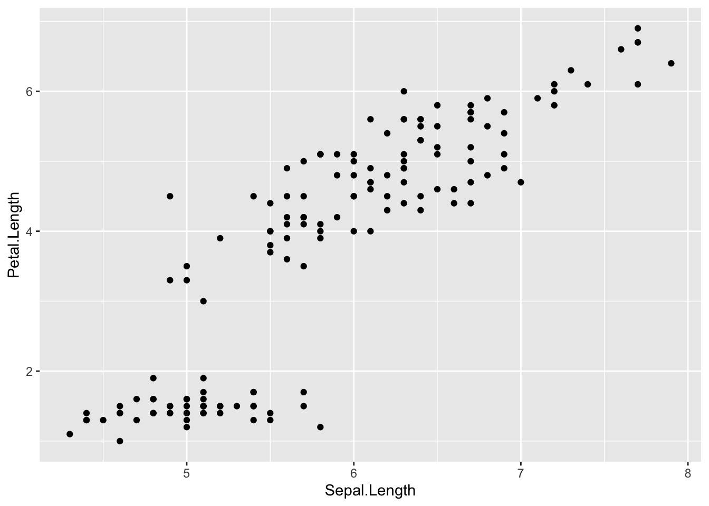
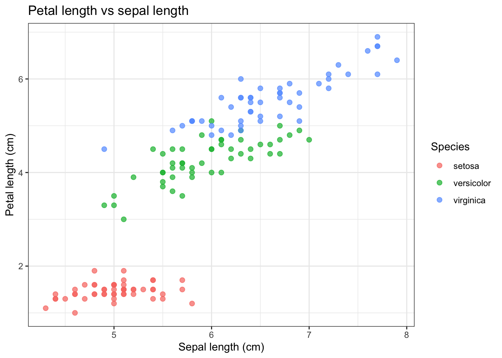
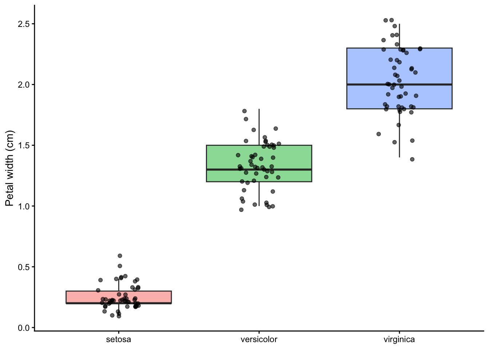
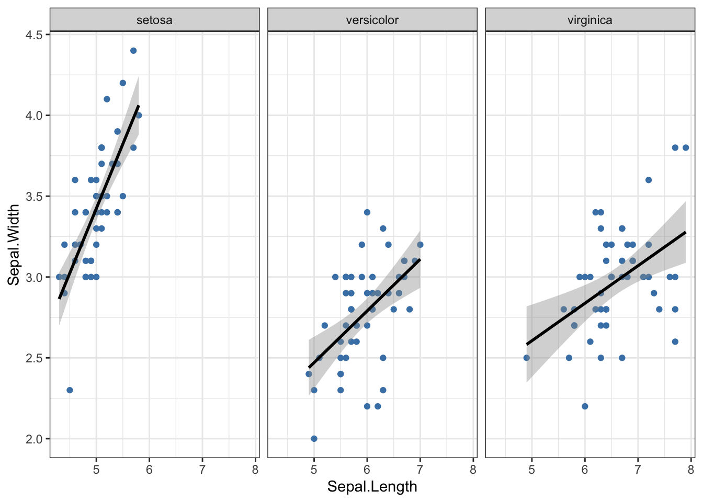
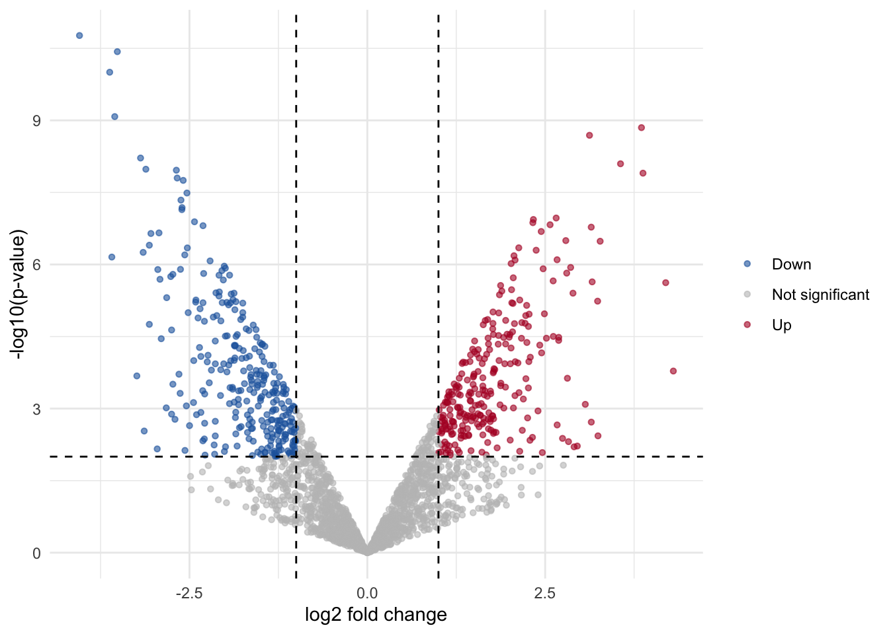

install.packages("ggplot2") # only needed onceWhat we did today
In the morning we learned how to make plots in R with ggplot2. In the afternoon we had a discussion about AI in bioinformatics.
Part 1: ggplot2
Setup
library(ggplot2)The grammar of graphics
Every ggplot is built from the same layers, added with +:
| Layer | Question it answers | Example |
|---|---|---|
| data | which table? | ggplot(iris, ...) |
aesthetics aes() |
which column goes where (x, y, colour, size…)? | aes(x = Sepal.Length, colour = Species) |
| geoms | what shape? points, lines, boxes… | geom_point(), geom_boxplot() |
| facets | split into small panels? | facet_wrap(~ Species) |
| scales | how values map to colours/axes | scale_colour_manual(), scale_y_log10() |
| labels | titles and axis names | labs(title = ..., x = ...) |
| theme | the look (background, fonts…) | theme_bw() |
1. A first plot
iris is a dataset built into R: flower measurements from three species.
ggplot(data = iris, mapping = aes(x = Sepal.Length, y = Petal.Length)) +
geom_point()
2. Colour, labels and a theme
ggplot(iris, aes(x = Sepal.Length, y = Petal.Length, colour = Species)) +
geom_point(size = 2, alpha = 0.7) +
labs(
title = "Petal length vs sepal length",
x = "Sepal length (cm)",
y = "Petal length (cm)",
colour = "Species"
) +
theme_bw()
ImportantInside or outside
aes()?
- Inside
aes()= depends on the data:aes(colour = Species)gives each species its own colour. - Outside
aes()= the same for everything:geom_point(colour = "blue")makes all points blue.
3. Boxplots with the data points on top
ggplot(iris, aes(x = Species, y = Petal.Width, fill = Species)) +
geom_boxplot(alpha = 0.5, outlier.shape = NA) +
geom_jitter(width = 0.15, alpha = 0.6) +
labs(x = NULL, y = "Petal width (cm)") +
theme_classic() +
theme(legend.position = "none")
4. Facets and trend lines
ggplot(iris, aes(x = Sepal.Length, y = Sepal.Width)) +
geom_point(colour = "steelblue") +
geom_smooth(method = "lm", colour = "black") +
facet_wrap(~ Species) +
theme_bw()
5. A volcano plot
A volcano plot is the classic way to show a differential expression result: fold change on the x-axis, significance on the y-axis. The data below is simulated, just to practise the plot.
set.seed(42)
n_genes <- 2000
de <- data.frame(
gene = paste0("gene_", seq_len(n_genes)),
log2FC = rnorm(n_genes, mean = 0, sd = 1.2)
)
de$pvalue <- 10^(-abs(de$log2FC) * runif(n_genes, 0.5, 3))
de$direction <- ifelse(de$pvalue < 0.01 & de$log2FC > 1, "Up",
ifelse(de$pvalue < 0.01 & de$log2FC < -1, "Down", "Not significant"))
head(de) gene log2FC pvalue direction
1 gene_1 1.6451501 0.0005177275 Up
2 gene_2 -0.6776378 0.0104638682 Not significant
3 gene_3 0.4357541 0.2273419244 Not significant
4 gene_4 0.7594351 0.0100262655 Not significant
5 gene_5 0.4851220 0.5083378570 Not significant
6 gene_6 -0.1273494 0.6325646647 Not significanttable(de$direction)
Down Not significant Up
293 1444 263 ggplot(de, aes(x = log2FC, y = -log10(pvalue), colour = direction)) +
geom_point(alpha = 0.6, size = 1.2) +
geom_vline(xintercept = c(-1, 1), linetype = "dashed") +
geom_hline(yintercept = -log10(0.01), linetype = "dashed") +
scale_colour_manual(values = c("Down" = "#2166ac",
"Not significant" = "grey75",
"Up" = "#b2182b")) +
labs(x = "log2 fold change", y = "-log10(p-value)", colour = NULL) +
theme_minimal()
6. Saving a plot
p <- ggplot(iris, aes(Sepal.Length, Petal.Length, colour = Species)) + geom_point()
ggsave("my_plot.png", plot = p, width = 6, height = 4, dpi = 300)
ggsave("my_plot.pdf", plot = p, width = 6, height = 4) # vector format, good for papersPart 2: AI in bioinformatics
The afternoon was a discussion about AI in bioinformatics. The main points:
LLMs predict text, they don’t “know” things. They are trained on huge amounts of internet text, including biased and wrong content. They don’t say “I don’t know” and can hallucinate answers, including citations that don’t exist. Every reference an AI gives me must be checked.
Data privacy. Sequencing and patient data are sensitive. Pasting data into an online chatbot can send it to a company’s servers, depending on the terms of service. A safer habit is to describe the data (column names, data types) instead of uploading it. Local, open-weight models keep everything on my own computer, but need good hardware and are usually less capable.
Learning and productivity. Relying on AI too much can mean learning less. Studies discussed in the course suggest it does not always make experienced people faster either.
Responsibility. I am responsible for everything I use.
Environmental cost. Data centres use a lot of electricity and water, so it is worth thinking before sending a query.
AI and reproducibility. The habits from this week (version control, clear folder structure, documented decisions) also make it easier for an AI assistant, or a human colleague, to understand and help with a project.
Cheat sheet
| I want to… | Code |
|---|---|
| start a plot | ggplot(data, aes(x = ..., y = ...)) |
| scatter / line / bar / boxplot | geom_point(), geom_line(), geom_col(), geom_boxplot() |
| colour by a column | aes(colour = column) (or fill = for areas) |
| one fixed colour | geom_point(colour = "blue") |
| split into panels | facet_wrap(~ column) |
| add a trend line | geom_smooth(method = "lm") |
| set titles and axis names | labs(title = , x = , y = ) |
| change the look | theme_bw(), theme_minimal(), theme(legend.position = "none") |
| save | ggsave("plot.png", width = , height = , dpi = 300) |